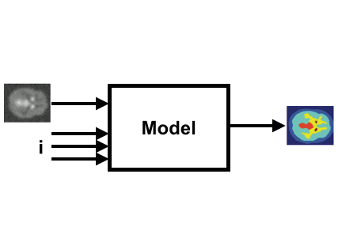

Visual Parameter Space Analysis: A Conceptual Framework

Venue. TVCG (2014)
Authors. Michael Sedlmair, Christoph Heinzl, Stefan Bruckner, Harald Piringer, Torsten Möller
Abstract. Various case studies in different application domains have shown the great potential of visual parameter space analysis to support validating and using simulation models. In order to guide and systematize research endeavors in this area, we provide a conceptual framework for visual parameter space analysis problems. The framework is based on our own experience and a structured analysis of the visualization literature. It contains three major components: (1) a data flow model that helps to abstractly describe visual parameter space analysis problems independent of their application domain; (2) a set of four navigation strategies of how parameter space analysis can be supported by visualization tools; and (3) a characterization of six analysis tasks. Based on our framework, we analyze and classify the current body of literature, and identify three open research gaps in visual parameter space analysis. The framework and its discussion are meant to support visualization designers and researchers in characterizing parameter space analysis problems and to guide their design and evaluation processes.